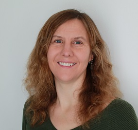
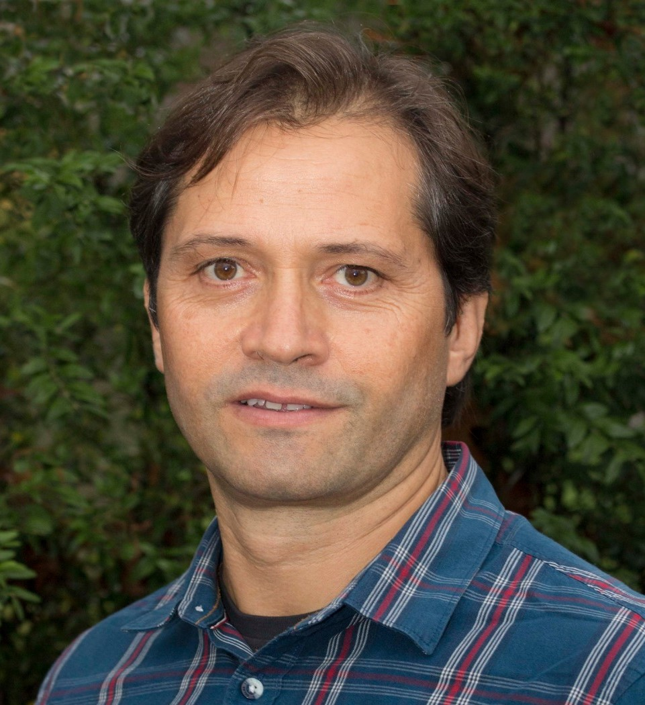
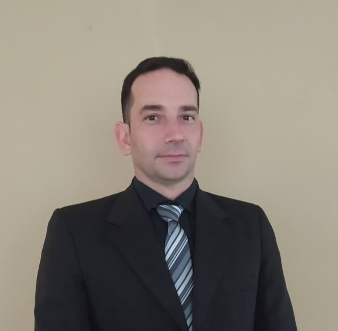
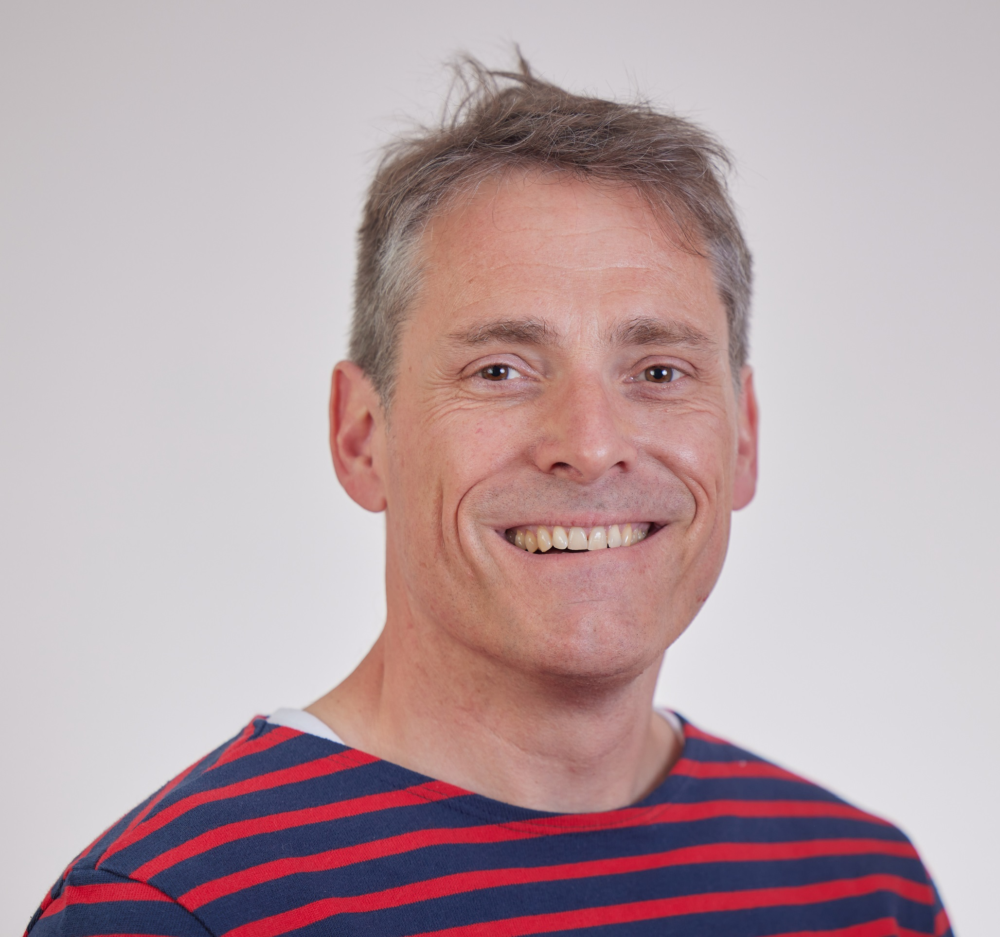

Advances in Agrogeophysics:
Techniques and Applications in Agriculture
Agriculture + geophysics = agrogeophysics! What are the current, potential and, future applications research needs? Come and discover with us!
Universidade de Lisboa, Lisbon 5th and 6th February 2026
Abstract submission & registration:
-
ABSTRACT SUBMISSION OPEN UNTIL 10th of January 2026
-
Presentation formats: Oral and poster
-
Abstract requirements: title + authors+ affiliation(s) + 250 words abstract
-
Registration is open now: REGISTER HERE
About this event
Agrogeophysics applies geophysical methods – including electromagnetic induction, ground-penetrating radar, electrical imaging, and seismic techniques – using platforms ranging from hand-held instruments and ground-based systems to drone- and satellite-based sensors, to study spatial and temporal patterns in the soil–water–plant system. The seminar brings together work that uses these methods to support management and decision-making in agricultural contexts, from mapping soil properties and water dynamics to exploring subsurface processes and their role in agro-ecosystems. We also invite studies addressing methodological challenges such as scaling, the development of pedophysical relationships, integration of geophysical and ancillary data, or advances in acquisition and processing techniques.
Invited speakers

Giorgio Cassiani | Università di Padova, Italy
“Static and dynamic aspects of non-invasive characterization and monitoring agricultural soils: assimilation with traditional probes and scale issues”
Katherine R. Grote | Missouri University of Science and Technology, USA
"Combined Geophysical and UAV-based Soil Property Characterization – Best Practices and Future Directions "
Joaquim João Sousa | Universidade de Trás-os-Montes e Alto Douro, Portugal
“Geospatial Intelligence for Precision Agriculture: Integrating Multi-Sensor Drone Data for Soil-Water-Crop Dynamics”
Julián Andrés Ramos | Universidad de la República de Uruguay, Uruguay
“Exploring Soil–Water Dynamics in Dryland and Irrigated Long-Term Crop Rotation Experiments in Uruguay: An Agrogeophysical Approach”

Bertille Loiseau | HydroSciences Montpellier, France
“From electrical resistivity tomography to soil water content: Towards a novel Ensemble Approach”
Andreas Kemna | Universtät Bonn, Germany
“Structural and functional characterization of crop roots with spectral electrical impedance tomography – promises and challenges”

António Graça | Sogrape, Portugal
“From Soil to Sip: how geophysics are unravelling 21st century wines”
Workshops
Three workshops will be proposed on the afternoon of the first day and morning of the second day:
-
Unlocking the Power of Ground Penetrating Radar in Agrogeophysics: A Hands-on Workshop | Lena Lärm and Anja Klotzsche (Forschungszentrum Jülich GmbH)
- This comprehensive workshop introduces the principles and applications of Ground Penetrating Radar (GPR) in agrogeophysics, highlighting its potential to non-invasively map and monitor subsurface features in agricultural environments. Participants will learn the fundamentals of GPR technology, data acquisition, and interpretation, with a focus on soil water content, root system analysis, and soil structure assessment. Next to novel processing approaches, we will highlight additionally related challenges and pitfalls.
-
OhmPi: an open-source resistivitymeter + processing timelapse ERT data: tips and tricks | Guillaume Blanchy (ILVO, Belgium), Benjamin Mary (ICA-CSIC, Department TECH4AGRO) & Roelof Versteeg (Subsurface Insights)
- In this workshop, participants will be able to place components on the measurements board, assemble an ohmpi system and operate it via the web interface. We will explain how the OhmPi is designed at the hardware (electronics) and software level as well as what are its capabilities and limitations. We will also explore how to diagnose potential errors and fix them.
-
Open workshop on science communication | Sarah Garré (ILVO, Belgium)
- We all want our research to have impact, but it is not always so easy to bring our science out there. Developing presentation skills is one important part of becoming a good science communicator, but there is so much more you can do. Depending on your target public, but also on your personal preferences, there is a wealth of ideas you can tap from. In this workshop, I will share some stories from my own experience as a science communicator and most importantly, we will work on making some your YOUR ideas more concrete together. Please bring your creativity and enthusiasm for agrogeophysics to this workshop, since those are the most important tools we will work with!
Practical information and registration
-
Abstract submission
- OPEN NOW (Deadline 10th of January 2026)
- SUBMIT ABSTRACT HERE
-
Registration
- Opening: 31st of October 2025
- Deadline: 12th January 2026
- fees: 60€ for Students, 100€ for all other cases.
- REGISTER HERE
- Opening: 31st of October 2025
- Seminar days:
- Thursday February 5th, 2026 (9:00 - 18:00) - oral presentations (morning) and workshop (afternoon)
- Friday February 6th, 2026 - (9:00 - 18:00) - company fair, poster and end of workshop (morning) and oral presentations (afternoon)
- Thursday February 5th, 2026 (Evening) - Social Dinner (fee: 60€)
Location: Instituto Superior Técnico, Lisbon, Portugal
How to get there:
The conference will take place in the Instituto Superior Técnico - Anfiteatro Abreu Faro which is just a 8 minute walk from the subway station Alameda.
Accommodations
Here are three suggested hotels close to the venue:
- Al Fonte Luminosa (8 minutes walk to the venue)
- Hotel A.S. Lisboa (9 minutes walk to the venue)
- Holiday Inn Lisbon (10 minutes walk to the venue)
- Ibis Lisboa Centro Saldanha | ALL - ALL (accor.com) (18 minutes walk to the venue)
Contact
Interested in participating? Get in touch! Pick the option that works best for you.
- Email abstracts.agrogeophy@gmail.com or another committee member directly.
- Find us on the Agrogeophy Slack (if it is the first time use this invitation link).
Previous seminars
- 2020 in Gembloux (Belgium) Geophysics conquering new territories: The rise of “agrogeophysics”
- 2022 in Brussels (Belgium) Agriculture and Geophysics: An Electrical Meeting!
- 2024 in Zurich (Switzerland) Agriculture and Geophysics: Illuminating the subsurface!
Collaborations
We’re always interested in new collaborations and interesting projects. We’d love to hear from you if your project or idea could benefit from our expertise in monitoring, data analysis, inverse problems, and research software engineering.
Reach out to our team to start a conversation!
Sponsors
This event is supported by: